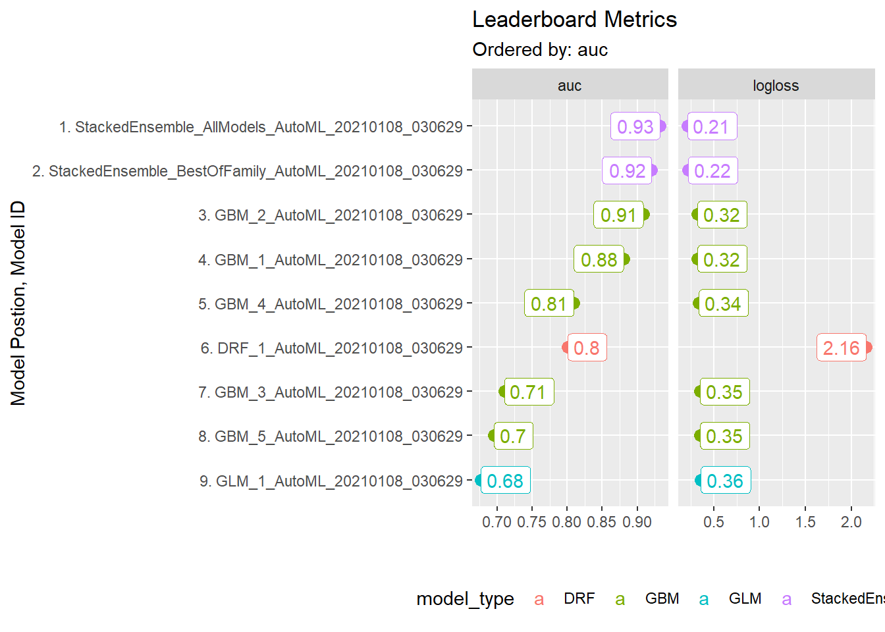
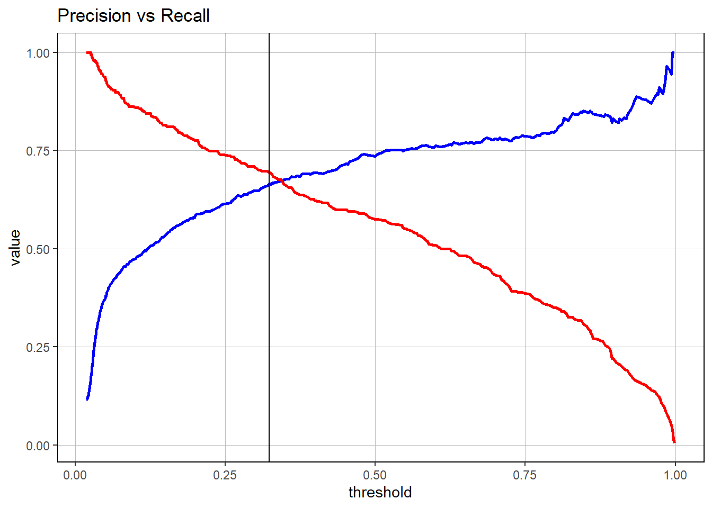
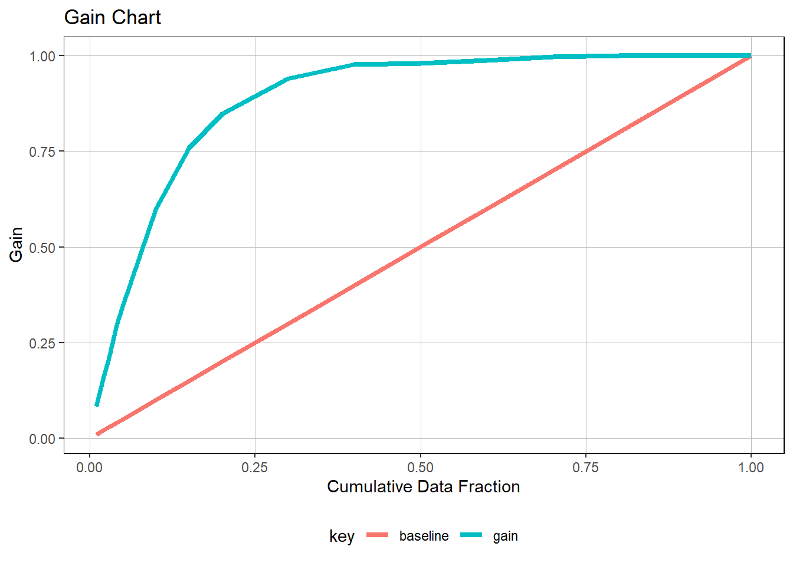
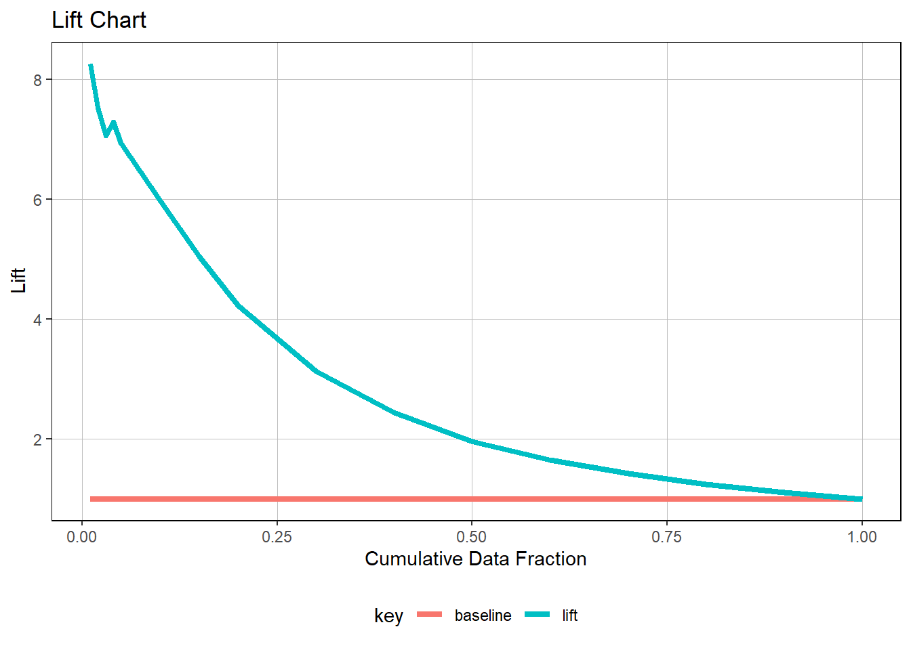
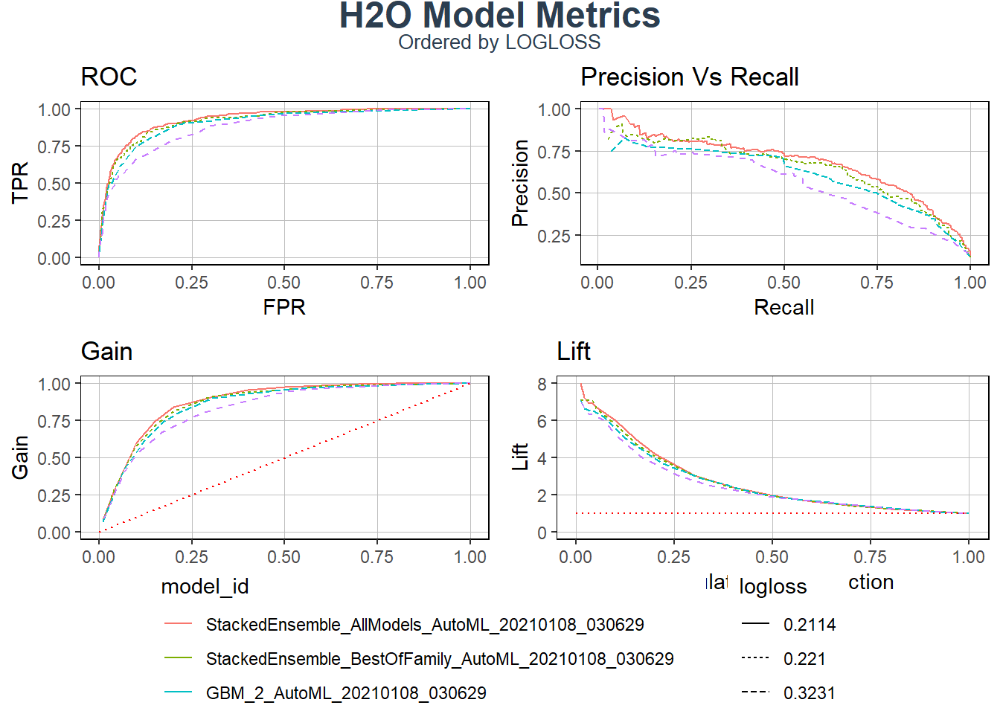

library(tidyverse)
library(tidyquant)
library(broom)
library(umap)
library(readxl)
library(h2o)
library(readxl)
library(rsample)
library(recipes)
library(PerformanceAnalytics)
library(h2o)
library(cowplot)
library(glue)
library(h2o)
library(tidyquant)
library(broom)
library(umap)
library(tidyverse)
library(readxl)
library(rsample)
library(recipes)
library(PerformanceAnalytics) # for skewersproduct_backorders_tbl <- read_csv("product_backorders.csv")
# Split into test and train
set.seed(seed = 1113)
split_obj <- rsample::initial_split(product_backorders_tbl, prop = 0.85)
# Assign training and test data
train_readable_tbl<- training(split_obj)
test_readable_tbl <- testing(split_obj)
recipe_obj <- recipe( went_on_backorder~., data = train_readable_tbl) %>%
step_zv(all_predictors()) %>%
prep()
train_tbl <- bake(recipe_obj, new_data = train_readable_tbl)
test_tbl <- bake(recipe_obj, new_data = test_readable_tbl)
#set the predictor names
predictors <- c("national_inv", "lead_time", "forecast_3_month", "sales_3_month")
# #specify the response
response <- "went_on_backorder"
h2o.init()## Connection successful!
##
## R is connected to the H2O cluster:
## H2O cluster uptime: 4 hours 31 minutes
## H2O cluster timezone: Europe/Berlin
## H2O data parsing timezone: UTC
## H2O cluster version: 3.32.0.1
## H2O cluster version age: 2 months and 30 days
## H2O cluster name: H2O_started_from_R_ahmed_cgv301
## H2O cluster total nodes: 1
## H2O cluster total memory: 1.28 GB
## H2O cluster total cores: 4
## H2O cluster allowed cores: 4
## H2O cluster healthy: TRUE
## H2O Connection ip: localhost
## H2O Connection port: 54321
## H2O Connection proxy: NA
## H2O Internal Security: FALSE
## H2O API Extensions: Amazon S3, Algos, AutoML, Core V3, TargetEncoder, Core V4
## R Version: R version 4.0.3 (2020-10-10) # Split data into a training and a validation data frame
# Setting the seed is just for reproducability
split_h2o <- h2o.splitFrame(as.h2o(train_tbl), ratios = c(0.85), seed = 1234)##
|
| | 0%
|
|======================================================================| 100% train_h2o <- split_h2o[[1]]
valid_h2o <- split_h2o[[2]]
test_h2o <- as.h2o(test_tbl)##
|
| | 0%
|
|======================================================================| 100% # Set the target and predictors
y <- response
x <- setdiff(names(train_h2o), y)
automl_models_h2o <- h2o.automl(
x = x,
y = y,
training_frame = train_h2o,
validation_frame = valid_h2o,
leaderboard_frame = test_h2o,
max_runtime_secs = 15,
nfolds = 5
)##
|
| | 0%
|
|= | 2%
## 03:06:29.380: User specified a validation frame with cross-validation still enabled. Please note that the models will still be validated using cross-validation only, the validation frame will be used to provide purely informative validation metrics on the trained models.
## 03:06:29.451: AutoML: XGBoost is not available; skipping it.
|
|===================== | 31%
|
|================================ | 46%
|
|=========================================== | 61%
|
|========================================================= | 82%
|
|======================================================================| 100%leaderboard_Model <- automl_models_h2o@leaderboard
Model<-automl_models_h2o@leader
h2o.saveModel(Model,path = "ml_journal-Automated_Machine_learning_2_model")## [1] "D:\\Mechatronics_master\\Third semester\\Data science\\Machine learning\\ml_journal-AhmedShaheen-MEC\\ml_journal-Automated_Machine_learning_2_model\\StackedEnsemble_AllModels_AutoML_20210108_030629"automl_models_h2o@leaderboard %>%
as_tibble() %>%
select(-c(mean_per_class_error, rmse, mse))## # A tibble: 9 x 4
## model_id auc logloss aucpr
## <chr> <dbl> <dbl> <dbl>
## 1 StackedEnsemble_AllModels_AutoML_20210108_030629 0.932 0.211 0.685
## 2 StackedEnsemble_BestOfFamily_AutoML_20210108_030629 0.921 0.221 0.651
## 3 GBM_2_AutoML_20210108_030629 0.909 0.323 0.608
## 4 GBM_1_AutoML_20210108_030629 0.880 0.324 0.563
## 5 GBM_4_AutoML_20210108_030629 0.810 0.338 0.442
## 6 DRF_1_AutoML_20210108_030629 0.801 2.16 0.461
## 7 GBM_3_AutoML_20210108_030629 0.710 0.351 0.309
## 8 GBM_5_AutoML_20210108_030629 0.696 0.353 0.262
## 9 GLM_1_AutoML_20210108_030629 0.677 0.360 0.194data_transformed_tbl <- automl_models_h2o@leaderboard %>%
as_tibble() %>%
select(-c(aucpr, mean_per_class_error, rmse, mse)) %>%
mutate(model_type = str_extract(model_id, "[^_]+")) %>%
slice(1:15) %>%
rownames_to_column(var = "rowname") %>%
mutate(
model_id = as_factor(model_id) %>% reorder(auc),
model_type = as.factor(model_type)
) %>%
pivot_longer(cols = -c(model_id, model_type, rowname),
names_to = "key",
values_to = "value",
names_transform = list(key = forcats::fct_inorder)
) %>%
mutate(model_id = paste0(rowname, ". ", model_id) %>% as_factor() %>% fct_rev())
data_transformed_tbl## # A tibble: 18 x 5
## rowname model_id model_type key value
## <chr> <fct> <fct> <fct> <dbl>
## 1 1 1. StackedEnsemble_AllModels_AutoML_2021~ StackedEnsemb~ auc 0.932
## 2 1 1. StackedEnsemble_AllModels_AutoML_2021~ StackedEnsemb~ loglo~ 0.211
## 3 2 2. StackedEnsemble_BestOfFamily_AutoML_2~ StackedEnsemb~ auc 0.921
## 4 2 2. StackedEnsemble_BestOfFamily_AutoML_2~ StackedEnsemb~ loglo~ 0.221
## 5 3 3. GBM_2_AutoML_20210108_030629 GBM auc 0.909
## 6 3 3. GBM_2_AutoML_20210108_030629 GBM loglo~ 0.323
## 7 4 4. GBM_1_AutoML_20210108_030629 GBM auc 0.880
## 8 4 4. GBM_1_AutoML_20210108_030629 GBM loglo~ 0.324
## 9 5 5. GBM_4_AutoML_20210108_030629 GBM auc 0.810
## 10 5 5. GBM_4_AutoML_20210108_030629 GBM loglo~ 0.338
## 11 6 6. DRF_1_AutoML_20210108_030629 DRF auc 0.801
## 12 6 6. DRF_1_AutoML_20210108_030629 DRF loglo~ 2.16
## 13 7 7. GBM_3_AutoML_20210108_030629 GBM auc 0.710
## 14 7 7. GBM_3_AutoML_20210108_030629 GBM loglo~ 0.351
## 15 8 8. GBM_5_AutoML_20210108_030629 GBM auc 0.696
## 16 8 8. GBM_5_AutoML_20210108_030629 GBM loglo~ 0.353
## 17 9 9. GLM_1_AutoML_20210108_030629 GLM auc 0.677
## 18 9 9. GLM_1_AutoML_20210108_030629 GLM loglo~ 0.360data_transformed_tbl## # A tibble: 18 x 5
## rowname model_id model_type key value
## <chr> <fct> <fct> <fct> <dbl>
## 1 1 1. StackedEnsemble_AllModels_AutoML_2021~ StackedEnsemb~ auc 0.932
## 2 1 1. StackedEnsemble_AllModels_AutoML_2021~ StackedEnsemb~ loglo~ 0.211
## 3 2 2. StackedEnsemble_BestOfFamily_AutoML_2~ StackedEnsemb~ auc 0.921
## 4 2 2. StackedEnsemble_BestOfFamily_AutoML_2~ StackedEnsemb~ loglo~ 0.221
## 5 3 3. GBM_2_AutoML_20210108_030629 GBM auc 0.909
## 6 3 3. GBM_2_AutoML_20210108_030629 GBM loglo~ 0.323
## 7 4 4. GBM_1_AutoML_20210108_030629 GBM auc 0.880
## 8 4 4. GBM_1_AutoML_20210108_030629 GBM loglo~ 0.324
## 9 5 5. GBM_4_AutoML_20210108_030629 GBM auc 0.810
## 10 5 5. GBM_4_AutoML_20210108_030629 GBM loglo~ 0.338
## 11 6 6. DRF_1_AutoML_20210108_030629 DRF auc 0.801
## 12 6 6. DRF_1_AutoML_20210108_030629 DRF loglo~ 2.16
## 13 7 7. GBM_3_AutoML_20210108_030629 GBM auc 0.710
## 14 7 7. GBM_3_AutoML_20210108_030629 GBM loglo~ 0.351
## 15 8 8. GBM_5_AutoML_20210108_030629 GBM auc 0.696
## 16 8 8. GBM_5_AutoML_20210108_030629 GBM loglo~ 0.353
## 17 9 9. GLM_1_AutoML_20210108_030629 GLM auc 0.677
## 18 9 9. GLM_1_AutoML_20210108_030629 GLM loglo~ 0.360data_transformed_tbl %>%
ggplot(aes(value, model_id, color = model_type)) +
geom_point(size = 3) +
geom_label(aes(label = round(value, 2), hjust = "inward")) +
# Facet to break out logloss and auc
facet_wrap(~ key, scales = "free_x") +
labs(title = "Leaderboard Metrics",
subtitle = paste0("Ordered by: ", "auc"),
y = "Model Postion, Model ID", x = "") +
theme(legend.position = "bottom") # Grid Search
grid_search_model <- h2o.loadModel("ml_journal-Automated_Machine_learning_2_model/StackedEnsemble_AllModels_AutoML_20210107_224531")
grid_search_model## Model Details:
## ==============
##
## H2OBinomialModel: stackedensemble
## Model ID: StackedEnsemble_AllModels_AutoML_20210107_224531
## Number of Base Models: 10
##
## Base Models (count by algorithm type):
##
## deeplearning drf gbm glm
## 1 2 6 1
##
## Metalearner:
##
## Metalearner algorithm: glm
## Metalearner cross-validation fold assignment:
## Fold assignment scheme: AUTO
## Number of folds: 5
## Fold column: NULL
## Metalearner hyperparameters:
##
##
## H2OBinomialMetrics: stackedensemble
## ** Reported on training data. **
##
## MSE: 0.04664896
## RMSE: 0.2159837
## LogLoss: 0.1665542
## Mean Per-Class Error: 0.1411272
## AUC: 0.9695554
## AUCPR: 0.8361613
## Gini: 0.9391108
##
## Confusion Matrix (vertical: actual; across: predicted) for F1-optimal threshold:
## No Yes Error Rate
## No 8521 284 0.032254 =284/8805
## Yes 303 909 0.250000 =303/1212
## Totals 8824 1193 0.058600 =587/10017
##
## Maximum Metrics: Maximum metrics at their respective thresholds
## metric threshold value idx
## 1 max f1 0.256367 0.755925 212
## 2 max f2 0.135270 0.821907 266
## 3 max f0point5 0.424893 0.789763 157
## 4 max accuracy 0.293859 0.941400 199
## 5 max precision 0.997190 1.000000 0
## 6 max recall 0.027349 1.000000 378
## 7 max specificity 0.997190 1.000000 0
## 8 max absolute_mcc 0.175042 0.723872 248
## 9 max min_per_class_accuracy 0.124218 0.911414 272
## 10 max mean_per_class_accuracy 0.114705 0.913524 277
## 11 max tns 0.997190 8805.000000 0
## 12 max fns 0.997190 1201.000000 0
## 13 max fps 0.019690 8805.000000 399
## 14 max tps 0.027349 1212.000000 378
## 15 max tnr 0.997190 1.000000 0
## 16 max fnr 0.997190 0.990924 0
## 17 max fpr 0.019690 1.000000 399
## 18 max tpr 0.027349 1.000000 378
##
## Gains/Lift Table: Extract with `h2o.gainsLift(<model>, <data>)` or `h2o.gainsLift(<model>, valid=<T/F>, xval=<T/F>)`
## H2OBinomialMetrics: stackedensemble
## ** Reported on validation data. **
##
## MSE: 0.06603241
## RMSE: 0.2569677
## LogLoss: 0.2243434
## Mean Per-Class Error: 0.1681104
## AUC: 0.925822
## AUCPR: 0.6400195
## Gini: 0.8516441
##
## Confusion Matrix (vertical: actual; across: predicted) for F1-optimal threshold:
## No Yes Error Rate
## No 1930 174 0.082700 =174/2104
## Yes 72 212 0.253521 =72/284
## Totals 2002 386 0.103015 =246/2388
##
## Maximum Metrics: Maximum metrics at their respective thresholds
## metric threshold value idx
## 1 max f1 0.179216 0.632836 221
## 2 max f2 0.112725 0.744298 260
## 3 max f0point5 0.482100 0.625000 111
## 4 max accuracy 0.482100 0.910804 111
## 5 max precision 0.997476 1.000000 0
## 6 max recall 0.024669 1.000000 385
## 7 max specificity 0.997476 1.000000 0
## 8 max absolute_mcc 0.179216 0.583687 221
## 9 max min_per_class_accuracy 0.114479 0.866197 259
## 10 max mean_per_class_accuracy 0.112725 0.869605 260
## 11 max tns 0.997476 2104.000000 0
## 12 max fns 0.997476 282.000000 0
## 13 max fps 0.019476 2104.000000 399
## 14 max tps 0.024669 284.000000 385
## 15 max tnr 0.997476 1.000000 0
## 16 max fnr 0.997476 0.992958 0
## 17 max fpr 0.019476 1.000000 399
## 18 max tpr 0.024669 1.000000 385
##
## Gains/Lift Table: Extract with `h2o.gainsLift(<model>, <data>)` or `h2o.gainsLift(<model>, valid=<T/F>, xval=<T/F>)`
## H2OBinomialMetrics: stackedensemble
## ** Reported on cross-validation data. **
## ** 5-fold cross-validation on training data (Metrics computed for combined holdout predictions) **
##
## MSE: 0.06744484
## RMSE: 0.2597014
## LogLoss: 0.2337148
## Mean Per-Class Error: 0.2156106
## AUC: 0.9138266
## AUCPR: 0.623122
## Gini: 0.8276533
##
## Confusion Matrix (vertical: actual; across: predicted) for F1-optimal threshold:
## No Yes Error Rate
## No 11528 632 0.051974 =632/12160
## Yes 625 1023 0.379248 =625/1648
## Totals 12153 1655 0.091034 =1257/13808
##
## Maximum Metrics: Maximum metrics at their respective thresholds
## metric threshold value idx
## 1 max f1 0.255882 0.619437 212
## 2 max f2 0.078528 0.698761 306
## 3 max f0point5 0.331120 0.632699 186
## 4 max accuracy 0.331120 0.912080 186
## 5 max precision 0.999404 0.937500 0
## 6 max recall 0.017271 1.000000 387
## 7 max specificity 0.999404 0.999836 0
## 8 max absolute_mcc 0.255882 0.567738 212
## 9 max min_per_class_accuracy 0.086554 0.838816 300
## 10 max mean_per_class_accuracy 0.077422 0.842540 307
## 11 max tns 0.999404 12158.000000 0
## 12 max fns 0.999404 1618.000000 0
## 13 max fps 0.008532 12160.000000 399
## 14 max tps 0.017271 1648.000000 387
## 15 max tnr 0.999404 0.999836 0
## 16 max fnr 0.999404 0.981796 0
## 17 max fpr 0.008532 1.000000 399
## 18 max tpr 0.017271 1.000000 387
##
## Gains/Lift Table: Extract with `h2o.gainsLift(<model>, <data>)` or `h2o.gainsLift(<model>, valid=<T/F>, xval=<T/F>)`test_tbl## # A tibble: 2,857 x 23
## sku national_inv lead_time in_transit_qty forecast_3_month
## <dbl> <dbl> <dbl> <dbl> <dbl>
## 1 1.12e6 7 8 0 0
## 2 1.12e6 0 12 0 163
## 3 1.13e6 150 8 0 325
## 4 1.13e6 0 8 0 3
## 5 1.13e6 3 3 0 16
## 6 1.13e6 -62 8 0 120
## 7 1.13e6 0 8 0 2
## 8 1.13e6 11 2 10 27
## 9 1.13e6 1 2 4 4
## 10 1.14e6 -1 8 0 9
## # ... with 2,847 more rows, and 18 more variables: forecast_6_month <dbl>,
## # forecast_9_month <dbl>, sales_1_month <dbl>, sales_3_month <dbl>,
## # sales_6_month <dbl>, sales_9_month <dbl>, min_bank <dbl>,
## # potential_issue <fct>, pieces_past_due <dbl>, perf_6_month_avg <dbl>,
## # perf_12_month_avg <dbl>, local_bo_qty <dbl>, deck_risk <fct>,
## # oe_constraint <fct>, ppap_risk <fct>, stop_auto_buy <fct>, rev_stop <fct>,
## # went_on_backorder <fct>h2o.performance(grid_search_model, newdata = as.h2o(test_tbl))##
|
| | 0%
|
|======================================================================| 100%## H2OBinomialMetrics: stackedensemble
##
## MSE: 0.06315357
## RMSE: 0.2513037
## LogLoss: 0.2183313
## Mean Per-Class Error: 0.1711951
## AUC: 0.9297926
## AUCPR: 0.6499886
## Gini: 0.8595852
##
## Confusion Matrix (vertical: actual; across: predicted) for F1-optimal threshold:
## No Yes Error Rate
## No 2339 184 0.072929 =184/2523
## Yes 90 244 0.269461 =90/334
## Totals 2429 428 0.095905 =274/2857
##
## Maximum Metrics: Maximum metrics at their respective thresholds
## metric threshold value idx
## 1 max f1 0.201687 0.640420 221
## 2 max f2 0.096409 0.728395 284
## 3 max f0point5 0.389786 0.656385 154
## 4 max accuracy 0.389786 0.918446 154
## 5 max precision 0.996593 1.000000 0
## 6 max recall 0.031624 1.000000 370
## 7 max specificity 0.996593 1.000000 0
## 8 max absolute_mcc 0.187938 0.593279 227
## 9 max min_per_class_accuracy 0.106826 0.853293 275
## 10 max mean_per_class_accuracy 0.096409 0.863535 284
## 11 max tns 0.996593 2523.000000 0
## 12 max fns 0.996593 332.000000 0
## 13 max fps 0.020097 2523.000000 399
## 14 max tps 0.031624 334.000000 370
## 15 max tnr 0.996593 1.000000 0
## 16 max fnr 0.996593 0.994012 0
## 17 max fpr 0.020097 1.000000 399
## 18 max tpr 0.031624 1.000000 370
##
## Gains/Lift Table: Extract with `h2o.gainsLift(<model>, <data>)` or `h2o.gainsLift(<model>, valid=<T/F>, xval=<T/F>)`search_grid_01 <- h2o.grid(
algorithm = "deeplearning",
grid_id = "search_grid_01",
x = x,
y = y,
# training and validation frame and crossfold validation
training_frame = train_h2o,
validation_frame = valid_h2o,
nfolds = 5,
# Hyperparamters: Use deeplearning_h2o@allparameters to see all
hyper_params = list(
# Use some combinations (the first one was the original)
hidden = list(c(10, 10, 10), c(50, 20, 10), c(20, 20, 20)),
epochs = c(10, 50, 20)
)
)##
|
| | 0%
|
|======================================================================| 100%search_grid_01## H2O Grid Details
## ================
##
## Grid ID: search_grid_01
## Used hyper parameters:
## - epochs
## - hidden
## Number of models: 90
## Number of failed models: 0
##
## Hyper-Parameter Search Summary: ordered by increasing logloss
## epochs hidden model_ids logloss
## 1 10.396790876881736 [10, 10, 10] search_grid_01_model_19 0.6872272269441417
## 2 10.390115491579332 [10, 10, 10] search_grid_01_model_10 0.8019901718186699
## 3 10.379148529101434 [50, 20, 10] search_grid_01_model_76 0.8212459493715552
## 4 51.98202355143529 [50, 20, 10] search_grid_01_model_50 0.8327419233652618
## 5 10.394622520649907 [50, 20, 10] search_grid_01_model_40 0.864255927056744
##
## ---
## epochs hidden model_ids logloss
## 85 52.008863874427014 [10, 10, 10] search_grid_01_model_2 3.760020398549825
## 86 20.79287977545045 [20, 20, 20] search_grid_01_model_72 3.982996617678043
## 87 52.01446341563045 [20, 20, 20] search_grid_01_model_62 3.999608770441817
## 88 52.00488790148506 [10, 10, 10] search_grid_01_model_56 4.741461845786739
## 89 20.79885310027837 [50, 20, 10] search_grid_01_model_15 5.1541284744691325
## 90 51.99653962675832 [20, 20, 20] search_grid_01_model_71 6.757877764291338h2o.getGrid(grid_id = "search_grid_01", sort_by = "auc", decreasing = TRUE)## H2O Grid Details
## ================
##
## Grid ID: search_grid_01
## Used hyper parameters:
## - epochs
## - hidden
## Number of models: 90
## Number of failed models: 0
##
## Hyper-Parameter Search Summary: ordered by decreasing auc
## epochs hidden model_ids auc
## 1 51.98202355143529 [50, 20, 10] search_grid_01_model_50 0.6766130247588783
## 2 20.78583674094471 [50, 20, 10] search_grid_01_model_78 0.65798493289314
## 3 20.798433494599845 [50, 20, 10] search_grid_01_model_24 0.6345598332907512
## 4 10.40730809032598 [20, 20, 20] search_grid_01_model_16 0.628448158852836
## 5 20.815538895772114 [50, 20, 10] search_grid_01_model_6 0.6280717805873148
##
## ---
## epochs hidden model_ids auc
## 85 52.00118054543634 [50, 20, 10] search_grid_01_model_32 0.5217375227548543
## 86 10.39973847867544 [50, 20, 10] search_grid_01_model_4 0.5210769333642055
## 87 51.993617845941706 [10, 10, 10] search_grid_01_model_38 0.5207654263940342
## 88 20.785329625967172 [10, 10, 10] search_grid_01_model_57 0.5130598392788708
## 89 20.79758024534127 [20, 20, 20] search_grid_01_model_45 0.5100362381036024
## 90 20.802074059358134 [20, 20, 20] search_grid_01_model_90 0.5007095672186382search_grid_01_model_1 <- h2o.getModel("search_grid_01_model_1")
search_grid_01_model_1 %>% h2o.auc(train = T, valid = T, xval = T)## train valid xval
## 0.6521814 0.6270526 0.5897518search_grid_01_model_1 %>%
h2o.performance(newdata = as.h2o(test_tbl))##
|
| | 0%
|
|======================================================================| 100%## H2OBinomialMetrics: deeplearning
##
## MSE: 0.1052787
## RMSE: 0.3244668
## LogLoss: 0.3974823
## Mean Per-Class Error: 0.404194
## AUC: 0.6518983
## AUCPR: 0.2197715
## Gini: 0.3037967
##
## Confusion Matrix (vertical: actual; across: predicted) for F1-optimal threshold:
## No Yes Error Rate
## No 1964 559 0.221562 =559/2523
## Yes 196 138 0.586826 =196/334
## Totals 2160 697 0.264263 =755/2857
##
## Maximum Metrics: Maximum metrics at their respective thresholds
## metric threshold value idx
## 1 max f1 0.158513 0.267701 206
## 2 max f2 0.040741 0.445923 350
## 3 max f0point5 0.378959 0.266749 74
## 4 max accuracy 0.932781 0.885194 10
## 5 max precision 0.932781 0.607143 10
## 6 max recall 0.000034 1.000000 399
## 7 max specificity 0.999862 0.998018 0
## 8 max absolute_mcc 0.783253 0.166765 22
## 9 max min_per_class_accuracy 0.102825 0.577844 269
## 10 max mean_per_class_accuracy 0.050803 0.603219 333
## 11 max tns 0.999862 2518.000000 0
## 12 max fns 0.999862 328.000000 0
## 13 max fps 0.000034 2523.000000 399
## 14 max tps 0.000034 334.000000 399
## 15 max tnr 0.999862 0.998018 0
## 16 max fnr 0.999862 0.982036 0
## 17 max fpr 0.000034 1.000000 399
## 18 max tpr 0.000034 1.000000 399
##
## Gains/Lift Table: Extract with `h2o.gainsLift(<model>, <data>)` or `h2o.gainsLift(<model>, valid=<T/F>, xval=<T/F>)`stacked_ensemble_h2o <- h2o.loadModel("ml_journal-Automated_Machine_learning_2_model/StackedEnsemble_AllModels_AutoML_20210108_015304")
performance_h2o <- h2o.performance(stacked_ensemble_h2o, newdata = as.h2o(test_tbl))##
|
| | 0%
|
|======================================================================| 100%typeof(performance_h2o)## [1] "S4"performance_h2o %>% slotNames()## [1] "algorithm" "on_train" "on_valid" "on_xval" "metrics"performance_h2o@metrics## $model
## $model$`__meta`
## $model$`__meta`$schema_version
## [1] 3
##
## $model$`__meta`$schema_name
## [1] "ModelKeyV3"
##
## $model$`__meta`$schema_type
## [1] "Key<Model>"
##
##
## $model$name
## [1] "StackedEnsemble_AllModels_AutoML_20210108_015304"
##
## $model$type
## [1] "Key<Model>"
##
## $model$URL
## [1] "/3/Models/StackedEnsemble_AllModels_AutoML_20210108_015304"
##
##
## $model_checksum
## [1] "-2137875469075093584"
##
## $frame
## $frame$name
## [1] "test_tbl_sid_bb1e_132"
##
##
## $frame_checksum
## [1] "-1590291148178685696"
##
## $description
## NULL
##
## $scoring_time
## [1] 1.610072e+12
##
## $predictions
## NULL
##
## $MSE
## [1] 0.05601617
##
## $RMSE
## [1] 0.2366774
##
## $nobs
## [1] 2857
##
## $custom_metric_name
## NULL
##
## $custom_metric_value
## [1] 0
##
## $r2
## [1] 0.457412
##
## $logloss
## [1] 0.196452
##
## $AUC
## [1] 0.9417586
##
## $pr_auc
## [1] 0.7119371
##
## $Gini
## [1] 0.8835172
##
## $mean_per_class_error
## [1] 0.1758813
##
## $domain
## [1] "No" "Yes"
##
## $cm
## $cm$`__meta`
## $cm$`__meta`$schema_version
## [1] 3
##
## $cm$`__meta`$schema_name
## [1] "ConfusionMatrixV3"
##
## $cm$`__meta`$schema_type
## [1] "ConfusionMatrix"
##
##
## $cm$table
## Confusion Matrix: Row labels: Actual class; Column labels: Predicted class
## No Yes Error Rate
## No 2406 117 0.0464 = 117 / 2,523
## Yes 102 232 0.3054 = 102 / 334
## Totals 2508 349 0.0767 = 219 / 2,857
##
##
## $thresholds_and_metric_scores
## Metrics for Thresholds: Binomial metrics as a function of classification thresholds
## threshold f1 f2 f0point5 accuracy precision recall specificity
## 1 0.998898 0.011905 0.007474 0.029240 0.883794 1.000000 0.005988 1.000000
## 2 0.996792 0.029499 0.018643 0.070621 0.884844 1.000000 0.014970 1.000000
## 3 0.995788 0.058140 0.037147 0.133690 0.886594 1.000000 0.029940 1.000000
## 4 0.994837 0.074928 0.048184 0.168394 0.887644 1.000000 0.038922 1.000000
## 5 0.993040 0.096591 0.062777 0.209360 0.888694 0.944444 0.050898 0.999604
## absolute_mcc min_per_class_accuracy mean_per_class_accuracy tns fns fps tps
## 1 0.072744 0.005988 0.502994 2523 332 0 2
## 2 0.115079 0.014970 0.507485 2523 329 0 5
## 3 0.162889 0.029940 0.514970 2523 324 0 10
## 4 0.185820 0.038922 0.519461 2523 321 0 13
## 5 0.205079 0.050898 0.525251 2522 317 1 17
## tnr fnr fpr tpr idx
## 1 1.000000 0.994012 0.000000 0.005988 0
## 2 1.000000 0.985030 0.000000 0.014970 1
## 3 1.000000 0.970060 0.000000 0.029940 2
## 4 1.000000 0.961078 0.000000 0.038922 3
## 5 0.999604 0.949102 0.000396 0.050898 4
##
## ---
## threshold f1 f2 f0point5 accuracy precision recall
## 395 0.020644 0.214860 0.406227 0.146056 0.145607 0.120360 1.000000
## 396 0.020348 0.213282 0.403967 0.144890 0.137557 0.119371 1.000000
## 397 0.020043 0.211526 0.401442 0.143594 0.128456 0.118272 1.000000
## 398 0.019719 0.210129 0.399426 0.142564 0.121106 0.117399 1.000000
## 399 0.019222 0.209667 0.398758 0.142224 0.118656 0.117111 1.000000
## 400 0.018879 0.209339 0.398283 0.141983 0.116906 0.116906 1.000000
## specificity absolute_mcc min_per_class_accuracy mean_per_class_accuracy tns
## 395 0.032501 0.062545 0.032501 0.516250 82
## 396 0.023385 0.052834 0.023385 0.511692 59
## 397 0.013080 0.039331 0.013080 0.506540 33
## 398 0.004756 0.023630 0.004756 0.502378 12
## 399 0.001982 0.015234 0.001982 0.500991 5
## 400 0.000000 0.000000 0.000000 0.500000 0
## fns fps tps tnr fnr fpr tpr idx
## 395 0 2441 334 0.032501 0.000000 0.967499 1.000000 394
## 396 0 2464 334 0.023385 0.000000 0.976615 1.000000 395
## 397 0 2490 334 0.013080 0.000000 0.986920 1.000000 396
## 398 0 2511 334 0.004756 0.000000 0.995244 1.000000 397
## 399 0 2518 334 0.001982 0.000000 0.998018 1.000000 398
## 400 0 2523 334 0.000000 0.000000 1.000000 1.000000 399
##
## $max_criteria_and_metric_scores
## Maximum Metrics: Maximum metrics at their respective thresholds
## metric threshold value idx
## 1 max f1 0.323580 0.679356 188
## 2 max f2 0.125719 0.745243 270
## 3 max f0point5 0.520073 0.705795 135
## 4 max accuracy 0.480941 0.927896 144
## 5 max precision 0.998898 1.000000 0
## 6 max recall 0.025434 1.000000 378
## 7 max specificity 0.998898 1.000000 0
## 8 max absolute_mcc 0.323580 0.636047 188
## 9 max min_per_class_accuracy 0.087553 0.865636 294
## 10 max mean_per_class_accuracy 0.071412 0.872407 306
## 11 max tns 0.998898 2523.000000 0
## 12 max fns 0.998898 332.000000 0
## 13 max fps 0.018879 2523.000000 399
## 14 max tps 0.025434 334.000000 378
## 15 max tnr 0.998898 1.000000 0
## 16 max fnr 0.998898 0.994012 0
## 17 max fpr 0.018879 1.000000 399
## 18 max tpr 0.025434 1.000000 378
##
## $gains_lift_table
## Gains/Lift Table: Avg response rate: 11.69 %, avg score: 12.70 %
## group cumulative_data_fraction lower_threshold lift cumulative_lift
## 1 1 0.01015051 0.983449 8.258930 8.258930
## 2 2 0.02030102 0.949574 6.784121 7.521526
## 3 3 0.03010151 0.896397 6.109923 7.061934
## 4 4 0.04025201 0.854943 7.963969 7.289404
## 5 5 0.05005250 0.803196 5.498931 6.938822
## 6 6 0.10010501 0.429004 5.024664 5.981743
## 7 7 0.15015751 0.211347 3.170324 5.044603
## 8 8 0.20021001 0.115391 1.794523 4.232083
## 9 9 0.29996500 0.046491 0.930423 3.134098
## 10 10 0.40007000 0.034363 0.358905 2.439693
## 11 11 0.50017501 0.029974 0.029909 1.957399
## 12 12 0.59993000 0.027532 0.090041 1.646899
## 13 13 0.70003500 0.025604 0.089726 1.424223
## 14 14 0.79978999 0.023861 0.030014 1.250328
## 15 15 0.89989499 0.022050 0.000000 1.111241
## 16 16 1.00000000 0.018589 0.000000 1.000000
## response_rate score cumulative_response_rate cumulative_score
## 1 0.965517 0.992662 0.965517 0.992662
## 2 0.793103 0.971039 0.879310 0.981850
## 3 0.714286 0.921029 0.825581 0.962048
## 4 0.931034 0.880146 0.852174 0.941395
## 5 0.642857 0.829368 0.811189 0.919459
## 6 0.587413 0.621150 0.699301 0.770305
## 7 0.370629 0.310652 0.589744 0.617087
## 8 0.209790 0.158233 0.494755 0.502374
## 9 0.108772 0.069594 0.366394 0.358450
## 10 0.041958 0.039293 0.285214 0.278591
## 11 0.003497 0.031784 0.228831 0.229195
## 12 0.010526 0.028698 0.192532 0.195857
## 13 0.010490 0.026513 0.166500 0.171641
## 14 0.003509 0.024746 0.146171 0.153319
## 15 0.000000 0.022992 0.129911 0.138821
## 16 0.000000 0.020904 0.116906 0.127017
## capture_rate cumulative_capture_rate gain cumulative_gain
## 1 0.083832 0.083832 725.893042 725.893042
## 2 0.068862 0.152695 578.412141 652.152591
## 3 0.059880 0.212575 510.992301 606.193427
## 4 0.080838 0.293413 696.396861 628.940380
## 5 0.053892 0.347305 449.893071 593.882166
## 6 0.251497 0.598802 402.466396 498.174281
## 7 0.158683 0.757485 217.032369 404.460310
## 8 0.089820 0.847305 79.452284 323.208304
## 9 0.092814 0.940120 -6.957664 213.409820
## 10 0.035928 0.976048 -64.109543 143.969279
## 11 0.002994 0.979042 -97.009129 95.739871
## 12 0.008982 0.988024 -90.995903 64.689873
## 13 0.008982 0.997006 -91.027386 42.422305
## 14 0.002994 1.000000 -96.998634 25.032823
## 15 0.000000 1.000000 -100.000000 11.124076
## 16 0.000000 1.000000 -100.000000 0.000000
## kolmogorov_smirnov
## 1 0.083436
## 2 0.149920
## 3 0.206630
## 4 0.286675
## 5 0.336604
## 6 0.564716
## 7 0.687727
## 8 0.732759
## 9 0.724900
## 10 0.652227
## 11 0.542260
## 12 0.439471
## 13 0.336285
## 14 0.226714
## 15 0.113357
## 16 0.000000
##
## $residual_deviance
## [1] 1122.527
##
## $null_deviance
## [1] 2061.286
##
## $AIC
## [1] 1138.527
##
## $null_degrees_of_freedom
## [1] 2856
##
## $residual_degrees_of_freedom
## [1] 2849# Classifier Summary Metrics
h2o.auc(performance_h2o, train = T, valid = T, xval = T)## [1] 0.9417586# our value is [1] 0.9037603
h2o.auc(stacked_ensemble_h2o, train = T, valid = T, xval = T)## train valid xval
## 0.9787684 0.9548814 0.9304988# train valid xval
# 0.9320589 0.8932458 0.8576325
h2o.giniCoef(performance_h2o)## [1] 0.8835172# [1] 0.8075205
h2o.logloss(performance_h2o)## [1] 0.196452# [1] 0.2362433
# result for the training data
h2o.confusionMatrix(stacked_ensemble_h2o)## Confusion Matrix (vertical: actual; across: predicted) for max f1 @ threshold = 0.341126899054185:
## No Yes Error Rate
## No 8579 237 0.026883 =237/8816
## Yes 227 974 0.189009 =227/1201
## Totals 8806 1211 0.046321 =464/10017# Confusion Matrix (vertical: actual; across: predicted) for max f1 @ threshold = 0.268791256959701
# result for the hold out set
h2o.confusionMatrix(performance_h2o)## Confusion Matrix (vertical: actual; across: predicted) for max f1 @ threshold = 0.323579611938672:
## No Yes Error Rate
## No 2406 117 0.046373 =117/2523
## Yes 102 232 0.305389 =102/334
## Totals 2508 349 0.076654 =219/2857# Confusion Matrix (vertical: actual; across: predicted) for max f1 @ threshold = 0.25817823725732performance_tbl <- performance_h2o %>%
h2o.metric() %>%
as.tibble()
performance_tbl %>%
glimpse()## Rows: 400
## Columns: 20
## $ threshold <dbl> 0.9988981, 0.9967924, 0.9957879, 0.9948373,...
## $ f1 <dbl> 0.01190476, 0.02949853, 0.05813953, 0.07492...
## $ f2 <dbl> 0.007473842, 0.018642804, 0.037147103, 0.04...
## $ f0point5 <dbl> 0.02923977, 0.07062147, 0.13368984, 0.16839...
## $ accuracy <dbl> 0.8837942, 0.8848442, 0.8865943, 0.8876444,...
## $ precision <dbl> 1.0000000, 1.0000000, 1.0000000, 1.0000000,...
## $ recall <dbl> 0.005988024, 0.014970060, 0.029940120, 0.03...
## $ specificity <dbl> 1.0000000, 1.0000000, 1.0000000, 1.0000000,...
## $ absolute_mcc <dbl> 0.07274403, 0.11507888, 0.16288896, 0.18581...
## $ min_per_class_accuracy <dbl> 0.005988024, 0.014970060, 0.029940120, 0.03...
## $ mean_per_class_accuracy <dbl> 0.5029940, 0.5074850, 0.5149701, 0.5194611,...
## $ tns <dbl> 2523, 2523, 2523, 2523, 2522, 2522, 2522, 2...
## $ fns <dbl> 332, 329, 324, 321, 317, 313, 312, 311, 309...
## $ fps <dbl> 0, 0, 0, 0, 1, 1, 1, 1, 1, 1, 2, 3, 4, 4, 4...
## $ tps <dbl> 2, 5, 10, 13, 17, 21, 22, 23, 25, 27, 29, 3...
## $ tnr <dbl> 1.0000000, 1.0000000, 1.0000000, 1.0000000,...
## $ fnr <dbl> 0.9940120, 0.9850299, 0.9700599, 0.9610778,...
## $ fpr <dbl> 0.0000000000, 0.0000000000, 0.0000000000, 0...
## $ tpr <dbl> 0.005988024, 0.014970060, 0.029940120, 0.03...
## $ idx <int> 0, 1, 2, 3, 4, 5, 6, 7, 8, 9, 10, 11, 12, 1...# save our theme
theme_new <- theme(
legend.position = "bottom",
legend.key = element_blank(),
panel.background = element_rect(fill = "transparent"),
panel.border = element_rect(color = "black", fill = NA, size = 0.5),
panel.grid.major = element_line(color = "grey", size = 0.333)
) performance_tbl %>%
filter(f1 == max(f1))## # A tibble: 1 x 20
## threshold f1 f2 f0point5 accuracy precision recall specificity
## <dbl> <dbl> <dbl> <dbl> <dbl> <dbl> <dbl> <dbl>
## 1 0.324 0.679 0.688 0.671 0.923 0.665 0.695 0.954
## # ... with 12 more variables: absolute_mcc <dbl>, min_per_class_accuracy <dbl>,
## # mean_per_class_accuracy <dbl>, tns <dbl>, fns <dbl>, fps <dbl>, tps <dbl>,
## # tnr <dbl>, fnr <dbl>, fpr <dbl>, tpr <dbl>, idx <int>performance_tbl %>%
ggplot(aes(x = threshold)) +
geom_line(aes(y = precision), color = "blue", size = 1) +
geom_line(aes(y = recall), color = "red", size = 1) +
# Insert line where precision and recall are harmonically optimized
geom_vline(xintercept = h2o.find_threshold_by_max_metric(performance_h2o, "f1")) +
labs(title = "Precision vs Recall", y = "value") +
theme_new ## ROC Plot
path <- "/StackedEnsemble_AllModels_AutoML_20210108_015304"
load_model_performance_metrics <- function(path, test_tbl) {
model_h2o <- h2o.loadModel(path)
perf_h2o <- h2o.performance(model_h2o, newdata = as.h2o(test_tbl))
perf_h2o %>%
h2o.metric() %>%
as_tibble() %>%
mutate(auc = h2o.auc(perf_h2o)) %>%
select(tpr, fpr, auc)
}
#model_metrics_tbl <- fs::dir_info(path = "ml_journal-Automated_Machine_learning_2_model/") %>%
# select(path) %>%
# mutate(metrics = map(path, load_model_performance_metrics, test_tbl)) %>%
# unnest(cols = metrics)
#model_metrics_tbl %>%
# mutate(
# # Extract the model names
# path = str_split(path, pattern = "/", simplify = T)[,2] %>% as_factor(),
# auc = auc %>% round(3) %>% as.character() %>% as_factor()
# ) %>%
# ggplot(aes(fpr, tpr, color = path, linetype = auc)) +
# geom_line(size = 1) +
#
# # just for demonstration purposes
# geom_abline(color = "red", linetype = "dotted") +
#
# theme_new +
# theme(
# legend.direction = "vertical",
# ) +
# labs(
# title = "ROC Plot",
# subtitle = "Performance of 3 Top Performing Models"
# )# Precision vs Recall
load_model_performance_metrics <- function(path, test_tbl) {
model_h2o <- h2o.loadModel(path)
perf_h2o <- h2o.performance(model_h2o, newdata = as.h2o(test_tbl))
perf_h2o %>%
h2o.metric() %>%
as_tibble() %>%
mutate(auc = h2o.auc(perf_h2o)) %>%
select(tpr, fpr, auc, precision, recall)
}
#model_metrics_tbl <- fs::dir_info(path = "ml_journal-Automated_Machine_learning_2_model/") %>%
# select(path) %>%
# mutate(metrics = map(path, load_model_performance_metrics, test_tbl)) %>%
# unnest(cols = metrics)
#
#model_metrics_tbl %>%
# mutate(
# path = str_split(path, pattern = "/", simplify = T)[,2] %>% as_factor(),
# auc = auc %>% round(3) %>% as.character() %>% as_factor()
# ) %>%
# ggplot(aes(recall, precision, color = path, linetype = auc)) +
# geom_line(size = 1) +
# theme_new +
# theme(
# legend.direction = "vertical",
# ) +
# labs(
# title = "Precision vs Recall Plot",
# subtitle = "Performance of 3 Top Performing Models"
# )predictions <- h2o.predict(stacked_ensemble_h2o, newdata = as.h2o(test_tbl))##
|
| | 0%
|
|======================================================================| 100%
##
|
| | 0%
|
|======================================================================| 100%typeof(predictions)## [1] "environment"# [1] "environment"
predictions_tbl <- predictions %>% as_tibble()
# No 0.938624996 0.06137500
# Yes 0.767573922 0.23242608
# No 0.934670085 0.06532991
# Yes 0.580364130 0.41963587
# Yes 0.738244189 0.26175581
# Yes 0.767517540 0.23248246
# Yes 0.580365130 0.41963487
# No 0.940360179 0.05963982
# Yes 0.616682970 0.38331703
# Yes 0.111431957 0.88856804
# Gain & Lift
ranked_predictions_tbl <- predictions_tbl %>%
bind_cols(test_tbl) %>%
select(predict:Yes, went_on_backorder) %>%
arrange(desc(Yes))
ranked_predictions_tbl## # A tibble: 2,857 x 4
## predict No Yes went_on_backorder
## <fct> <dbl> <dbl> <fct>
## 1 Yes 0.000523 0.999 Yes
## 2 Yes 0.00168 0.998 Yes
## 3 Yes 0.00280 0.997 Yes
## 4 Yes 0.00334 0.997 Yes
## 5 Yes 0.00348 0.997 Yes
## 6 Yes 0.00388 0.996 Yes
## 7 Yes 0.00397 0.996 Yes
## 8 Yes 0.00435 0.996 Yes
## 9 Yes 0.00437 0.996 Yes
## 10 Yes 0.00449 0.996 Yes
## # ... with 2,847 more rowsranked_predictions_tbl %>%
mutate(ntile = ntile(Yes, n = 10)) %>%
group_by(ntile) %>%
summarise(
cases = n(),
responses = sum(went_on_backorder == "Yes")
) %>%
arrange(desc(ntile))## # A tibble: 10 x 3
## ntile cases responses
## <int> <int> <int>
## 1 10 285 200
## 2 9 285 82
## 3 8 285 32
## 4 7 286 12
## 5 6 286 1
## 6 5 286 3
## 7 4 286 3
## 8 3 286 1
## 9 2 286 0
## 10 1 286 0calculated_gain_lift_tbl <- ranked_predictions_tbl %>%
mutate(ntile = ntile(Yes, n = 10)) %>%
group_by(ntile) %>%
summarise(
cases = n(),
responses = sum(went_on_backorder == "Yes")
) %>%
arrange(desc(ntile)) %>%
# Add group numbers (opposite of ntile)
mutate(group = row_number()) %>%
select(group, cases, responses) %>%
# Calculations
mutate(
cumulative_responses = cumsum(responses),
pct_responses = responses / sum(responses),
gain = cumsum(pct_responses),
cumulative_pct_cases = cumsum(cases) / sum(cases),
lift = gain / cumulative_pct_cases,
gain_baseline = cumulative_pct_cases,
lift_baseline = gain_baseline / cumulative_pct_cases
)
calculated_gain_lift_tbl ## # A tibble: 10 x 10
## group cases responses cumulative_resp~ pct_responses gain cumulative_pct_~
## <int> <int> <int> <int> <dbl> <dbl> <dbl>
## 1 1 285 200 200 0.599 0.599 0.0998
## 2 2 285 82 282 0.246 0.844 0.200
## 3 3 285 32 314 0.0958 0.940 0.299
## 4 4 286 12 326 0.0359 0.976 0.399
## 5 5 286 1 327 0.00299 0.979 0.499
## 6 6 286 3 330 0.00898 0.988 0.600
## 7 7 286 3 333 0.00898 0.997 0.700
## 8 8 286 1 334 0.00299 1.00 0.800
## 9 9 286 0 334 0 1.00 0.900
## 10 10 286 0 334 0 1.00 1
## # ... with 3 more variables: lift <dbl>, gain_baseline <dbl>,
## # lift_baseline <dbl>gain_lift_tbl <- performance_h2o %>%
h2o.gainsLift() %>%
as.tibble()
## Gain Chart
gain_transformed_tbl <- gain_lift_tbl %>%
select(group, cumulative_data_fraction, cumulative_capture_rate, cumulative_lift) %>%
select(-contains("lift")) %>%
mutate(baseline = cumulative_data_fraction) %>%
rename(gain = cumulative_capture_rate) %>%
# prepare the data for the plotting (for the color and group aesthetics)
pivot_longer(cols = c(gain, baseline), values_to = "value", names_to = "key")
gain_transformed_tbl %>%
ggplot(aes(x = cumulative_data_fraction, y = value, color = key)) +
geom_line(size = 1.5) +
labs(
title = "Gain Chart",
x = "Cumulative Data Fraction",
y = "Gain"
) +
theme_new ## Lift Plot
lift_transformed_tbl <- gain_lift_tbl %>%
select(group, cumulative_data_fraction, cumulative_capture_rate, cumulative_lift) %>%
select(-contains("capture")) %>%
mutate(baseline = 1) %>%
rename(lift = cumulative_lift) %>%
pivot_longer(cols = c(lift, baseline), values_to = "value", names_to = "key")
lift_transformed_tbl %>%
ggplot(aes(x = cumulative_data_fraction, y = value, color = key)) +
geom_line(size = 1.5) +
labs(
title = "Lift Chart",
x = "Cumulative Data Fraction",
y = "Lift"
) +
theme_new ## Cowplot block
# set values to test the function while building it
h2o_leaderboard <- automl_models_h2o@leaderboard
newdata <- test_tbl
order_by <- "auc"
max_models <- 4
size <- 1
plot_h2o_performance <- function(h2o_leaderboard, newdata, order_by = c("auc", "logloss"),
max_models = 3, size = 1.5) {
# Inputs
leaderboard_tbl <- h2o_leaderboard %>%
as_tibble() %>%
slice(1:max_models)
newdata_tbl <- newdata %>%
as_tibble()
# Selecting the first, if nothing is provided
order_by <- tolower(order_by[[1]])
# Convert string stored in a variable to column name (symbol)
order_by_expr <- rlang::sym(order_by)
# Turn of the progress bars ( opposite h2o.show_progress())
h2o.no_progress()
# 1. Model metrics
get_model_performance_metrics <- function(model_id, test_tbl) {
model_h2o <- h2o.getModel(model_id)
perf_h2o <- h2o.performance(model_h2o, newdata = as.h2o(test_tbl))
perf_h2o %>%
h2o.metric() %>%
as.tibble() %>%
select(threshold, tpr, fpr, precision, recall)
}
model_metrics_tbl <- leaderboard_tbl %>%
mutate(metrics = map(model_id, get_model_performance_metrics, newdata_tbl)) %>%
unnest(cols = metrics) %>%
mutate(
model_id = as_factor(model_id) %>%
# programmatically reorder factors depending on order_by
fct_reorder(!! order_by_expr,
.desc = ifelse(order_by == "auc", TRUE, FALSE)),
auc = auc %>%
round(3) %>%
as.character() %>%
as_factor() %>%
fct_reorder(as.numeric(model_id)),
logloss = logloss %>%
round(4) %>%
as.character() %>%
as_factor() %>%
fct_reorder(as.numeric(model_id))
)
# 1A. ROC Plot
p1 <- model_metrics_tbl %>%
ggplot(aes(fpr, tpr, color = model_id, linetype = !! order_by_expr)) +
geom_line(size = size) +
theme_new +
labs(title = "ROC", x = "FPR", y = "TPR") +
theme(legend.direction = "vertical")
# 1B. Precision vs Recall
p2 <- model_metrics_tbl %>%
ggplot(aes(recall, precision, color = model_id, linetype = !! order_by_expr)) +
geom_line(size = size) +
theme_new +
labs(title = "Precision Vs Recall", x = "Recall", y = "Precision") +
theme(legend.position = "none")
# 2. Gain / Lift
get_gain_lift <- function(model_id, test_tbl) {
model_h2o <- h2o.getModel(model_id)
perf_h2o <- h2o.performance(model_h2o, newdata = as.h2o(test_tbl))
perf_h2o %>%
h2o.gainsLift() %>%
as.tibble() %>%
select(group, cumulative_data_fraction, cumulative_capture_rate, cumulative_lift)
}
gain_lift_tbl <- leaderboard_tbl %>%
mutate(metrics = map(model_id, get_gain_lift, newdata_tbl)) %>%
unnest(cols = metrics) %>%
mutate(
model_id = as_factor(model_id) %>%
fct_reorder(!! order_by_expr,
.desc = ifelse(order_by == "auc", TRUE, FALSE)),
auc = auc %>%
round(3) %>%
as.character() %>%
as_factor() %>%
fct_reorder(as.numeric(model_id)),
logloss = logloss %>%
round(4) %>%
as.character() %>%
as_factor() %>%
fct_reorder(as.numeric(model_id))
) %>%
rename(
gain = cumulative_capture_rate,
lift = cumulative_lift
)
# 2A. Gain Plot
p3 <- gain_lift_tbl %>%
ggplot(aes(cumulative_data_fraction, gain,
color = model_id, linetype = !! order_by_expr)) +
geom_line(size = size,) +
geom_segment(x = 0, y = 0, xend = 1, yend = 1,
color = "red", size = size, linetype = "dotted") +
theme_new +
expand_limits(x = c(0, 1), y = c(0, 1)) +
labs(title = "Gain",
x = "Cumulative Data Fraction", y = "Gain") +
theme(legend.position = "none")
# 2B. Lift Plot
p4 <- gain_lift_tbl %>%
ggplot(aes(cumulative_data_fraction, lift,
color = model_id, linetype = !! order_by_expr)) +
geom_line(size = size) +
geom_segment(x = 0, y = 1, xend = 1, yend = 1,
color = "red", size = size, linetype = "dotted") +
theme_new +
expand_limits(x = c(0, 1), y = c(0, 1)) +
labs(title = "Lift",
x = "Cumulative Data Fraction", y = "Lift") +
theme(legend.position = "none")
# Combine using cowplot
# cowplot::get_legend extracts a legend from a ggplot object
p_legend <- get_legend(p1)
# Remove legend from p1
p1 <- p1 + theme(legend.position = "none")
# cowplot::plt_grid() combines multiple ggplots into a single cowplot object
p <- cowplot::plot_grid(p1, p2, p3, p4, ncol = 2)
# cowplot::ggdraw() sets up a drawing layer
p_title <- ggdraw() +
# cowplot::draw_label() draws text on a ggdraw layer / ggplot object
draw_label("H2O Model Metrics", size = 18, fontface = "bold",
color = "#2C3E50")
p_subtitle <- ggdraw() +
draw_label(glue("Ordered by {toupper(order_by)}"), size = 10,
color = "#2C3E50")
# Combine everything
ret <- plot_grid(p_title, p_subtitle, p, p_legend,
# Adjust the relative spacing, so that the legends always fits
ncol = 1, rel_heights = c(0.05, 0.05, 1, 0.05 * max_models))
h2o.show_progress()
return(ret)
}
automl_models_h2o@leaderboard %>%
plot_h2o_performance(newdata = test_tbl, order_by = "logloss",
size = 0.5, max_models = 4)